7 月 8 日：Vision Pretraining for Dense Spatial 等视觉表征论文归档
本页按日期归档近期论文，保留优先级、主题、来源与方法线索，方便回看同一批工作的研究脉络。
先读 Vision Pretraining for Dense Spatial。直接提出面向 dense geometry 的自监督预训练目标，弥补语义 VFM 对边界/形状结构不敏感的问题。 其余论文按 P1/P2 与主题顺序扫读，重点看方法图、消融设置和是否能迁移到通用视觉表征。
论文索引
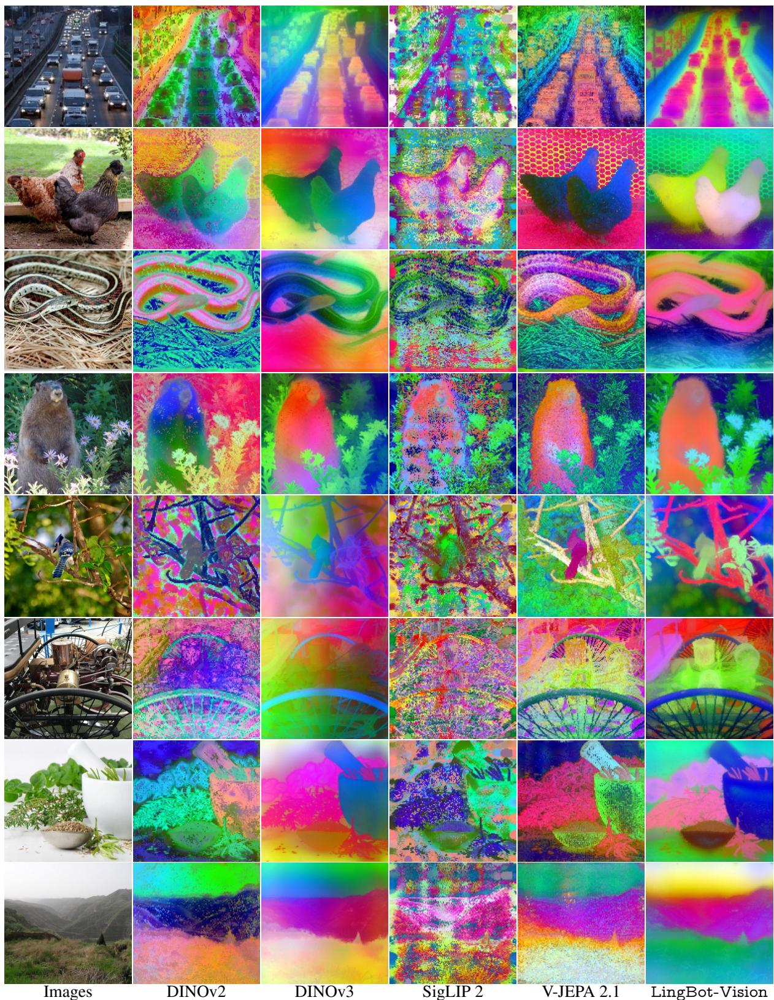
Vision Pretraining for Dense Spatial Perception
高相关；详见方法、贡献和实验边界。
方法：直接提出面向 dense geometry 的自监督预训练目标，弥补语义 VFM 对边界/形状结构不敏感的问题
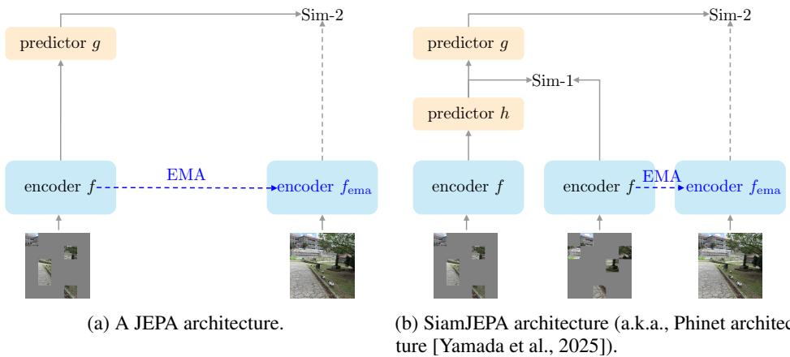
SiamJEPA: On the Role of Siamese Student Encoders in JEPA
高相关；详见方法、贡献和实验边界。
方法：研究 Siamese student encoder 对 JEPA 的正则化和早期学习收益，是今天最直接的 JEPA 目标改造论文
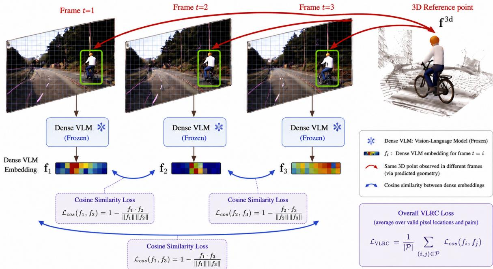
VLRC: Vision-Language Reprojection Consistency as a scalable signal for better feed-forward 3D pretraining
高相关；详见方法、贡献和实验边界。
方法：用 frozen vision-language representations 作为多视角一致性信号，为无 3D 标注的 feed-forward 3D 预训练提供可扩展监督
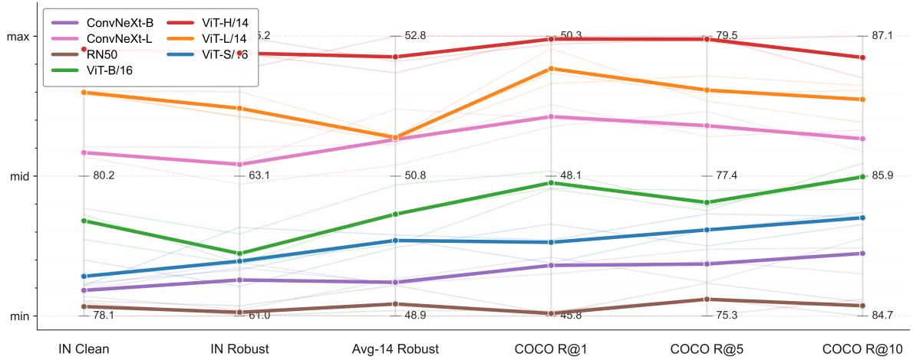
Text as Partial Constraint: Core-Residual Alignment for Robust Vision-Language Learning
高相关；详见方法、贡献和实验边界。
方法：把 caption 视为不完备约束，显式分离 consensus semantic core 和 unsaid residual，改进 CLIP 式对齐鲁棒性
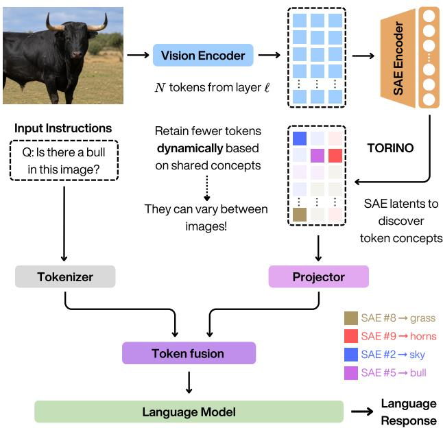
TORINO: Token Reduction via Interpretable Concept Overlap in Vision-Language Models
中高相关；详见方法、贡献和实验边界。
方法：用 sparse autoencoder concept overlap 做可解释 token pruning/merging，关注减少 token 同时保留语义证据
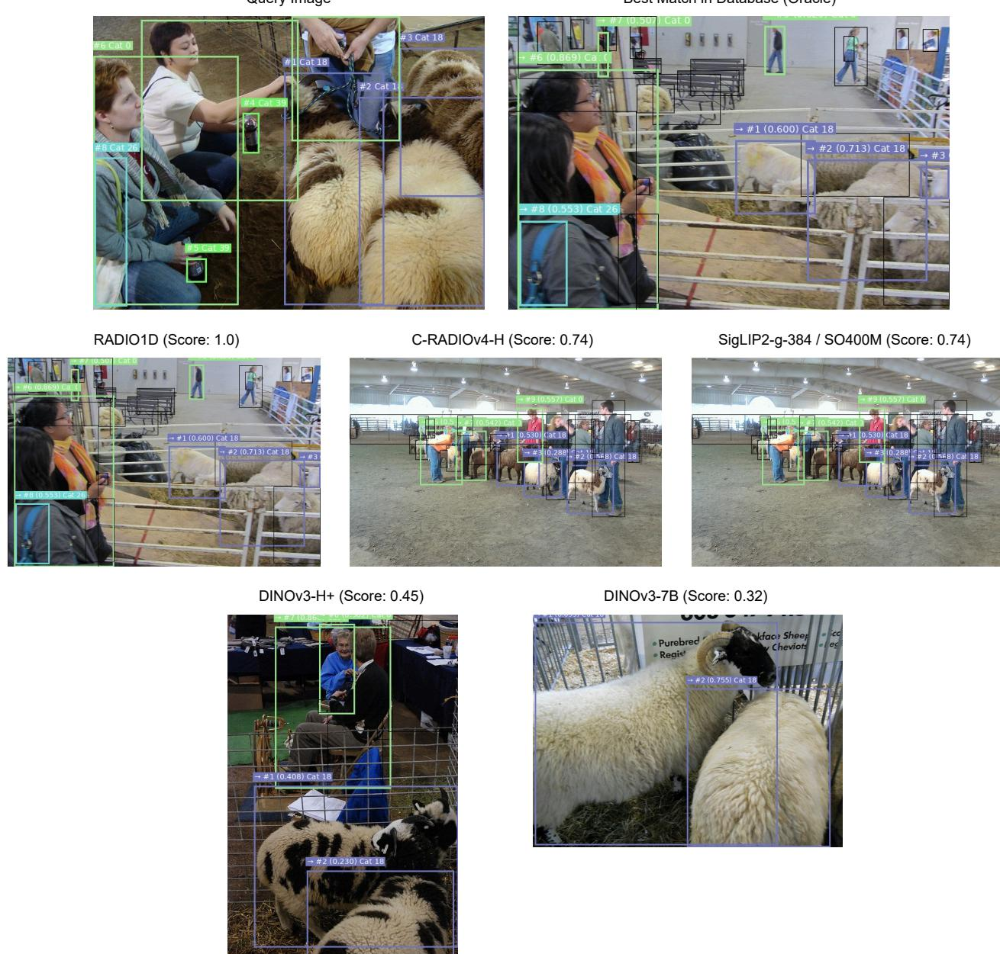
RADIO1D: Elastic Representations for Condensed Vision Modeling
中高相关；详见方法、贡献和实验边界。
方法：挑战固定 2D patch feature 假设，用多教师蒸馏和 autoencoder 生成可变长度 1D 视觉表示
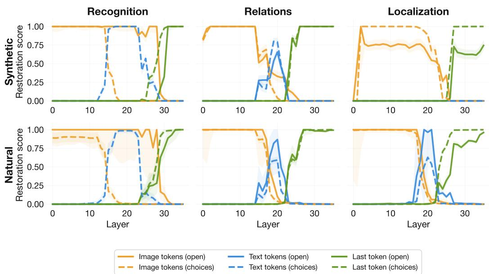
Pathways of Visual Information Flow in Vision-Language Models
中高相关；详见方法、贡献和实验边界。
方法：通过 causal patching 区分 direct visual pathway 与 text-mediated pathway，有助于判断 VLM 是否真正读出视觉 token
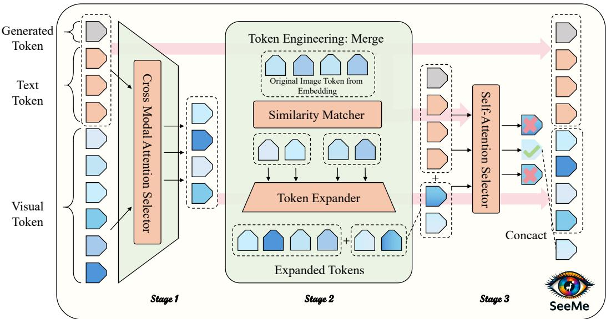
SeeMe: Mitigating Hallucinations in Large Vision-Language Models through Effective Visual Token Engineering
中高相关；详见方法、贡献和实验边界。
方法：把 hallucination 根源部分定位到 irrelevant/noisy visual tokens，并提出无需训练的三阶段 token 重构
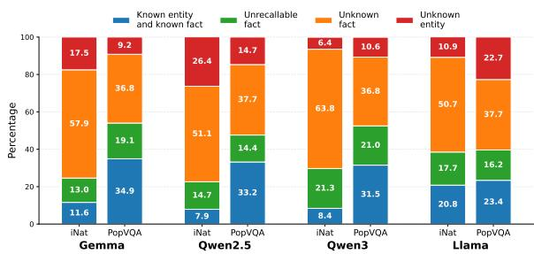
Does It Fail to See or Fail to Know? Attributing Errors in Vision-Language Models
中高相关；详见方法、贡献和实验边界。
方法：用 pre-generation visual-token/hidden-state signals 区分视觉识别失败和知识检索失败，适合做 VLM 诊断工具
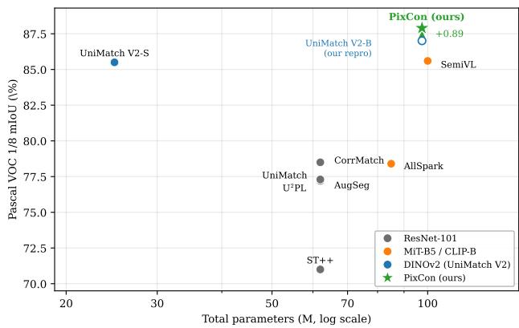
PixCon: Clean-Positive Contrastive Learning for Foundation-Model Semi-Supervised Segmentation
中相关；详见方法、贡献和实验边界。
方法：不是预训练论文，但给出 DINOv2 teacher 下 clean-positive pixel contrast 的低成本表征塑形方案
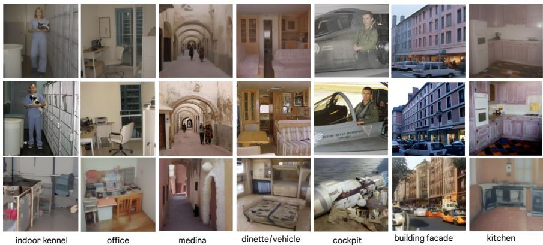
TrustCLIP: Learning Private Visual Features via Adversarial Reconstruction
中相关；详见方法、贡献和实验边界。
方法：从生成式反演攻击角度约束 CLIP/视觉特征，提醒通用表征要同时考虑可用性和隐私泄漏
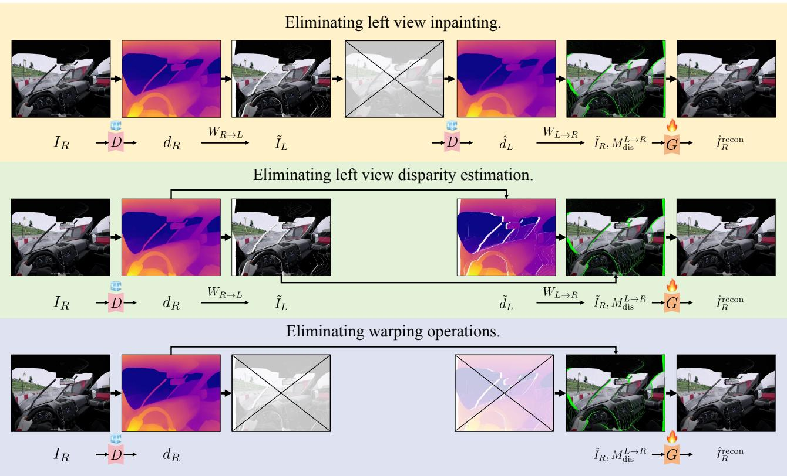
Geometric Reciprocity: Unlocking Self-Supervision for Stereoscopic Video Generation
中相关；详见方法、贡献和实验边界。
方法：任务是 monocular-to-stereo generation，但 cycle/geometric reciprocity 可作为视频几何自监督信号参考
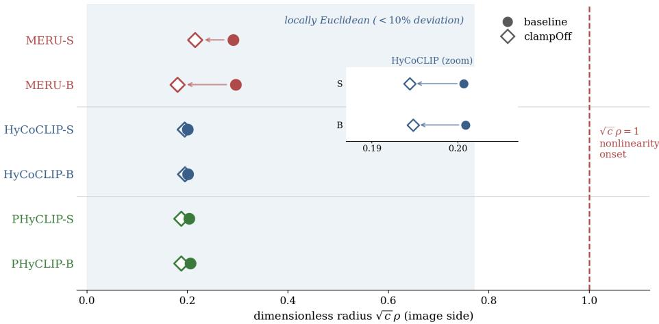
Is the Geometry Doing the Work? An Operating-Point Audit of Hierarchy in Hyperbolic Vision-Language Models
中相关；详见方法、贡献和实验边界。
方法：审计 MERU/HyCoCLIP/PHyCLIP 是否真正使用 hyperbolic geometry，适合作为层级 V-L 表征评估反例